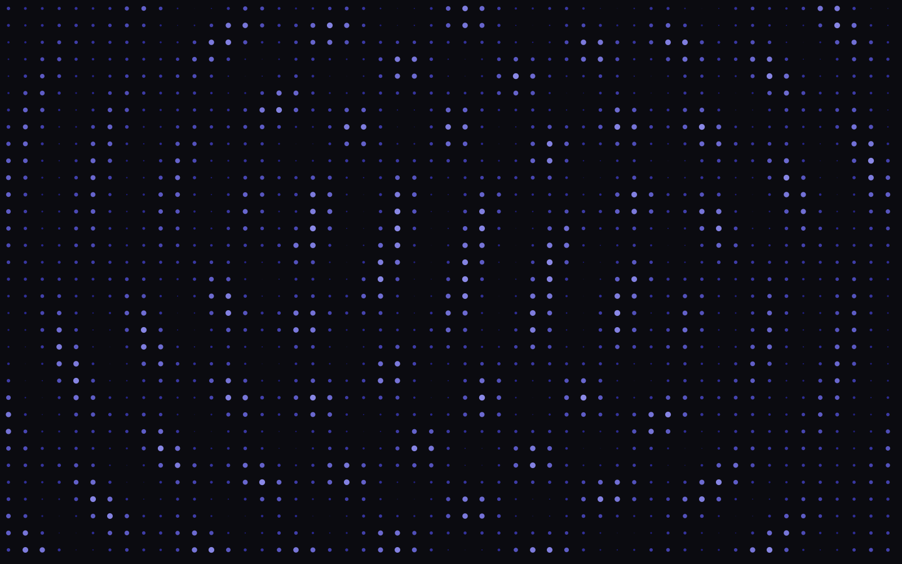
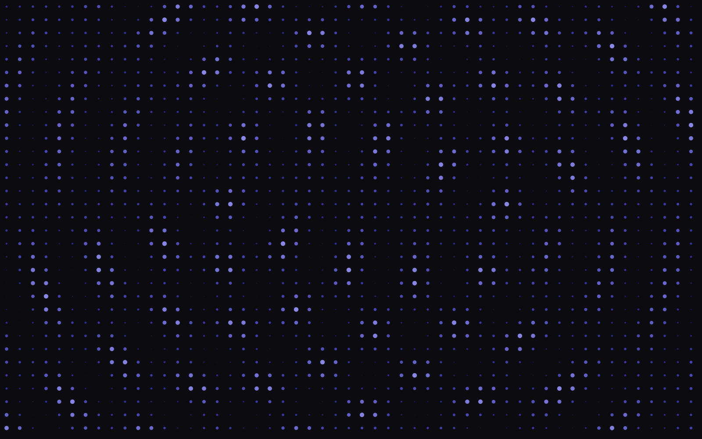
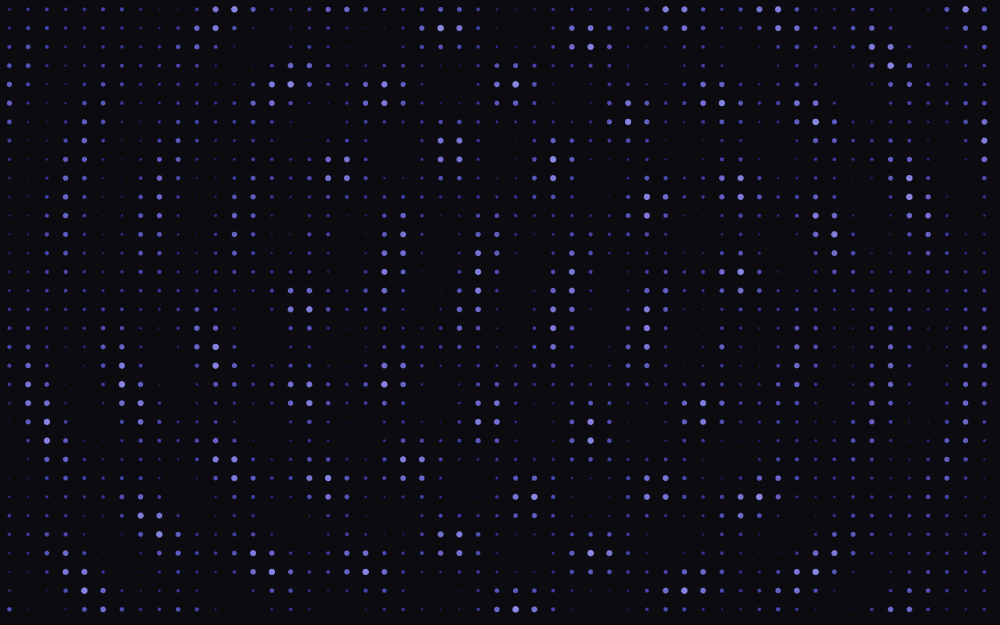
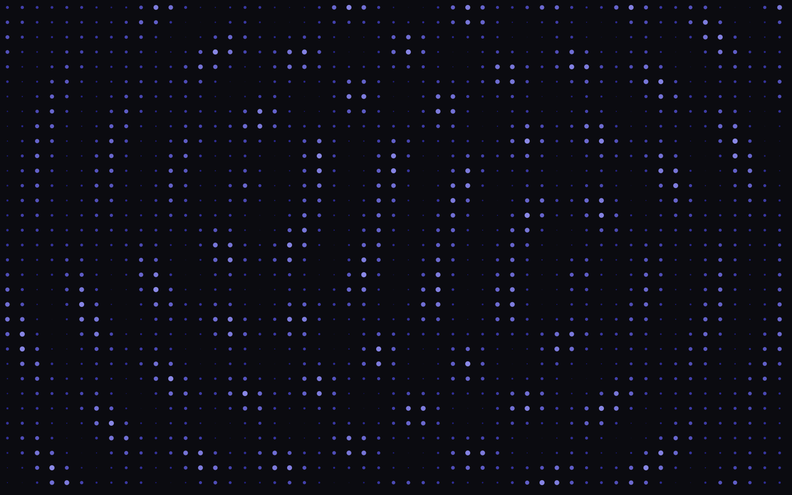

& Physicist Field notes in
light & matter
Crow (Ming) Tao
Universiteit van Amsterdam · crow.tao@student.uva.nl

01 / Interest
General Research Interest
Quantum gravity (holography / black holes / cosmology / quantum gravity in the lab); quantum chaos and many-body dynamics; quantum information and computation (complexity / full stack / simulation / resource theory); generalized symmetry.
Machine-learning theory (framework as field theory / learning theory / optimization / diffusion models).
Economics and finance (in terms of complex systems / phase transitions).

02 / Research
Research and Projects
-
Gravity, Quantum Chaos, Matrix Model
Sep. 2025–present
Unitary design, holography, random matrix theory
Advisor: Prof. Diego Hofman, University of Amsterdam
Second: Prof. Michael Walter, LMU Munich
We follow up on the discussion of interpreting GUE as the universal effective action describing the symmetry-broken phase of a system with global U(1) symmetry and attempt to provide a unified theory of scrambling, hydrodynamics, thermalization, and RMT universality. Understanding ensemble averaging in holography.
-
SYK Model Simulation on NISQ Hardware
Oct. 2025–present
NISQ, SYK model, quantum simulation
Advisor: Prof. Kareljan Schoutens, University of Amsterdam
This is a group project. Based on the work of M. Asaduzzaman et al., we simulate the SYK model on the Quantum Inspire Starmon-7 and Quantinuum H2 emulator and hardware. In the ongoing process, we test the effects of sparsification and deformed potential.
-
Geometric Deep Learning
Apr.–May 2025
Machine learning, symmetry, representation and group theory
Advisor: Prof. Christoph Weniger, University of Amsterdam
This is a group project. We explored equivariant neural networks, incorporated additional symmetries such as 3D rotations SO(3) and roto-translations SE(3) into neural networks beyond CNN, and applied the method to Galaxy10 DECaLS data.
-
On Higher Category Theory, the Cobordism Hypothesis, and TQFTs
Jan.–May 2024
Category theory, TQFT, mathematical physics
Advisor: Prof. Clark Barwick, University of Edinburgh
We try to present a coherent extraction of logic for building up topological quantum field theory and the cobordism hypothesis through various examples, including Chern–Simons theory, Yang–Mills TQFT, and Dijkgraaf–Witten theory. In particular, we try to develop the model of (∞, n)-category as a complete Segal space.
-
Classical Information and Communication Theory
Sep. 2022–May 2023
Category theory, classical information theory, quantum information theory
Advisor: Prof. Tom Leinster, University of Edinburgh
This is my Bachelor group project. We provided a comprehensive review of Shannon’s classical information theory, classical and quantum typicality, as well as the potential connection to machine learning and linguistics. In particular, we include a categorical construction of Shannon’s entropy through operad methods.

03 / Education & talks
Education
-
Master in Theoretical Physics, Universiteit van Amsterdam
Sep. 2024–present
In progress.
-
Bachelor in Mathematics and Physics, University of Edinburgh
2020–2024
First-Class Honors
Prize, EGUMS Scholarship funding
Workshop and Talks
-
Quantum Universe Attract Workshop
23–25 Nov. 2025
Speaker of “Gravity and Matrix Model,” Universität Hamburg / DESY

04 / Skills & contact
Technical Skills
Languages: Python, English, Mandarin, Japanese
Software: Qiskit, Mathematica, NumPy, PyTorch
Contact
Email address: crow.tao@student.uva.nl (crowtao2020@gmail.com)